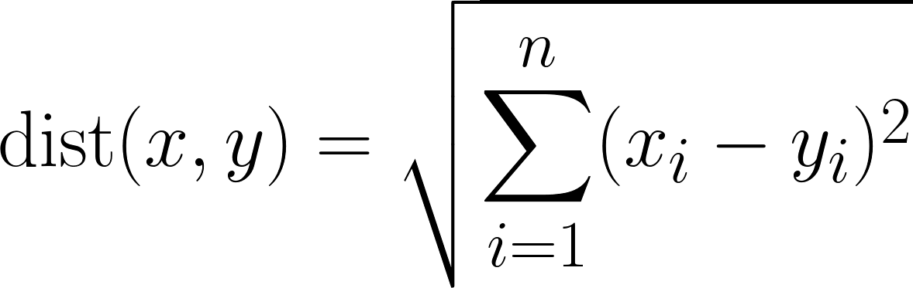
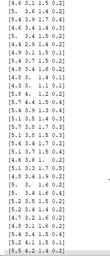
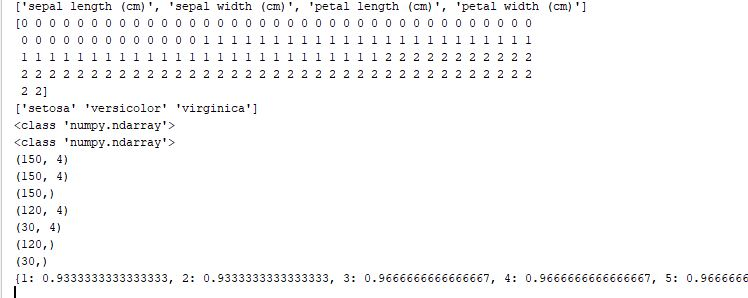
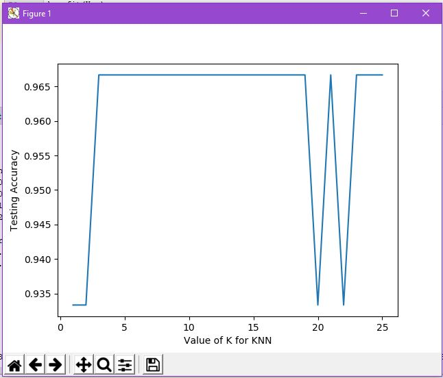

K-NN¶
K-NN atau K-nearest neighbor adalah algoritma yang berfungsi untuk melakukan klasifikasi suatu data berdasarkan data pembelajaran (train data sets), yang diambil dari k tetangga terdekatnya (nearest neighbors). Dengan k merupakan banyaknya tetangga terdekat.
Tujuan dari algoritma ini adalah untuk mengklasifikasikan obyek baru berdasarkan atribut dan sample-sample dari data training.
{kind=link}
penjelasan:
dari skema diatas dapat dilihat bahwa dalam menentukan nama atau kelas dari data baru menggunakan data training yang terdekat. sesuai dengan namanya yaitu k-nn, k disini ada yang menggunakan 3 dan 6 tergantung k nya sampek akurasi mendekati 100% maka itu yang digunakan, disini data baru (point berwarna kuning) dengan menggunakan k=3 maka class nya bisa dikatakan class A namu, ketika k=6 maka bisa bisa saja class aataupun class b, dilihat dari jumlah class paling banyak yang terdekat.
Tahapan Langkah Algoritma K-NN secara umum:¶
-
Menentukan parameter k (jumlah tetangga paling dekat).
-
Menghitung kuadrat jarak eucliden objek terhadap data training yang diberikan.
-
Mengurutkan hasil no 2 secara ascending (berurutan dari nilai tinggi ke rendah)
-
Mengumpulkan kategori Y (Klasifikasi nearest neighbor berdasarkan nilai k)
-
Dengan menggunakan kategori nearest neighbor yang paling mayoritas maka dapat dipredisikan kategori objek.
#### Teknik Pencarian K
Teknik Pencarian tetangga terdekat yang umum dilakukan dengan menggunakan formula jarak euclidean.
##### · Euclidean Distance
Jarak Euclidean adalah formula untuk mencari jarak antara 2 titik dalam ruang dua dimensi.
[
## contoh:
[
disini ada data sets tetang iris: memiliki 4 fitur, dengan jumlah data sebanyak 150 dan 3 kelas.
kali ini kita akan membuat k-nn dimana jika ada data baru akan masuk ke kelas iris apa menggunakan python:
cara mengerjakan:¶
from sklearn.datasets import load_iris
#Create bunch object containing iris dataset and its attributes.
iris = load_iris()
type(iris)
#Print the iris data
print(iris.data)
#Names of 4 features (column names)
print(iris.feature_names)
#Integers representing the species: 0 = setosa, 1=versicolor, 2=virginica
print(iris.target)
# 3 classes of target
print(iris.target_names)
print(type(iris.data))
print(type(iris.target))
# we have a total of 150 observations and 4 features
print(iris.data.shape)
# Feature matrix in a object named X
X = iris.data
# response vector in a object named y
y =iris.target
print(X.shape)
print(y.shape)
# splitting the data into training and test sets (80:20)
from sklearn.model_selection import train_test_split
X_train,X_test,y_train,y_test = train_test_split(X,y,test_size=0.2,random_state=4)
#shape of train and test objects
print(X_train.shape)
print(X_test.shape)
# shape of new y objects
print(y_train.shape)
print(y_test.shape)
#import the KNeighborsClassifier class from sklearn
from sklearn.neighbors import KNeighborsClassifier
#import metrics model to check the accuracy
from sklearn import metrics
#Try running from k=1 through 25 and record testing accuracy
k_range = range(1,26)
scores = {}
scores_list = []
for k in k_range:
knn = KNeighborsClassifier(n_neighbors=k)
knn.fit(X_train,y_train)
y_pred=knn.predict(X_test)
scores[k] = metrics.accuracy_score(y_test,y_pred)
scores_list.append(metrics.accuracy_score(y_test,y_pred))
#Testing accuracy for each value of K
print(scores)
import matplotlib.pyplot as plt
#plot the relationship between K and the testing accuracy
plt.plot(k_range,scores_list)
plt.xlabel('Value of K for KNN')
plt.ylabel('Testing Accuracy')
plt.show()
knn = KNeighborsClassifier(n_neighbors=5)
knn.fit(X,y)
##
#0 = setosa, 1=versicolor, 2=virginica
classes = {0:'setosa',1:'versicolor',2:'virginica'}
#Making prediction on some unseen data
#predict for the below two random observations
x_new = [[3,4,5,2],
[5,4,2,2]]
y_predict = knn.predict(x_new)
print(classes[y_predict[0]])
print(classes[y_predict[1]])
## maka hasil outputnya akan menunjukkan keakurasian nya:
[
[
dan grafik keakurasian:
[
Kelebihan dan Kekurangan dari Algoritma K-NN**¶
Kelebihan:¶
1. Sangat nonlinear
2. Mudah dipahami dan diimplementasikan
Kekurangan:¶
Perlu menunjukkan parameter K (jumlah tetangga terdekat).
Tidak menangani nilai hilang (missing value) secara implicit**.**
Sensitif terhadap data pencilan (outlier).
Rentan terhadap variabel yang non-informatif.
Rentan terhadap dimensionalitas yang tinggi.
Rentan terhadap perbedaan rentang variable.
Nilai komputasi yang tinggi.